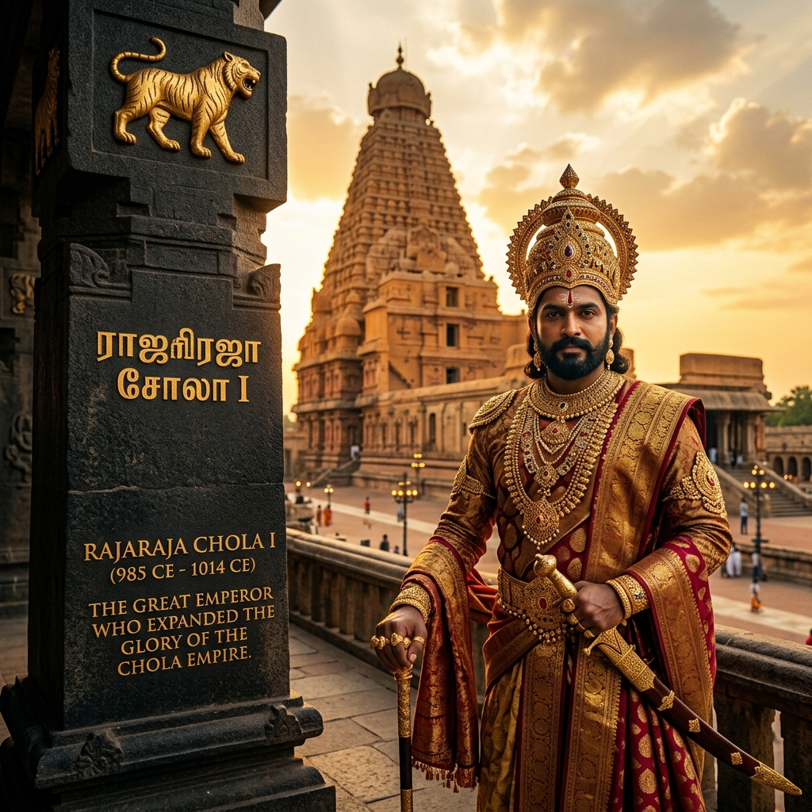
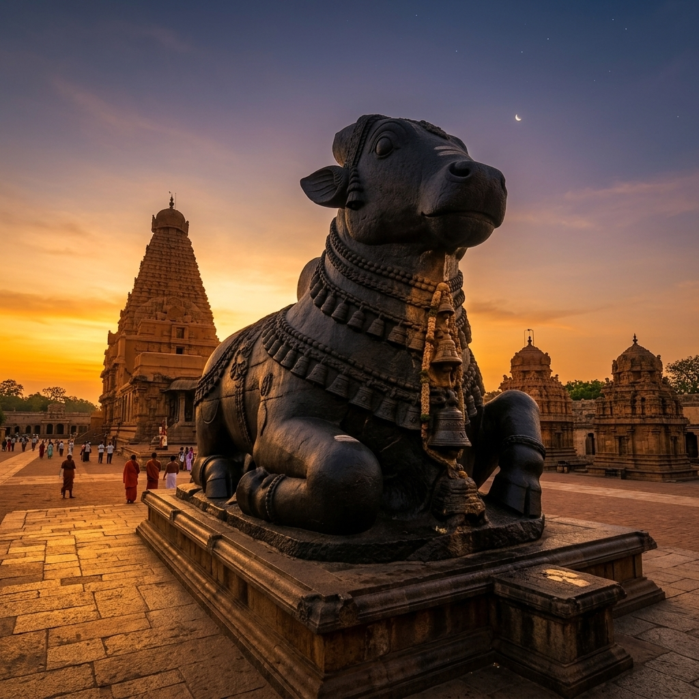
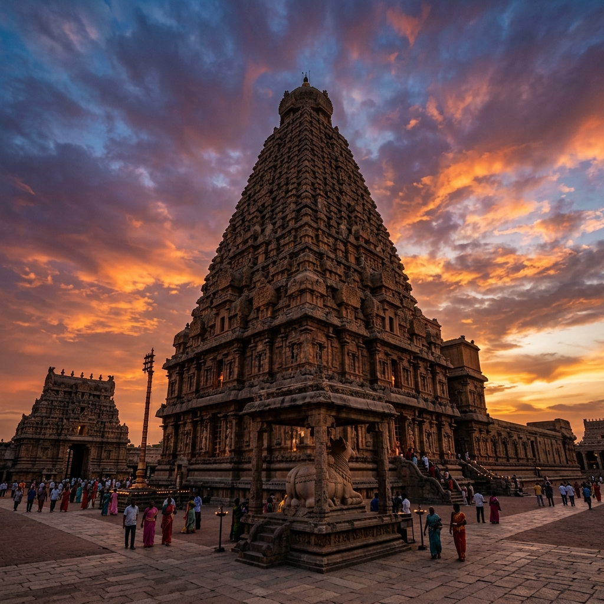

Sacred Sanctuary Discovery
Journey through the architectural marvels of the Tamil dynasties. Experience spiritual heritage through modern digital lenses.

Brihadeeswarar Temple
Annual Festival Calendar
Major occasions at Brihadeeswarar Temple
Thai Pongal
Harvest thanksgiving · Special abhishekam
Maha Shivaratri
100,000+ pilgrims · All-night worship
Panguni Uthiram
Divine wedding ceremony · Grand procession
Tamil New Year
Chithirai Vishu · Temple decorated with flowers
Vaikasi Visakam
Lord Murugan festival · Chariot procession
Aani Thirumanjanam
Sacred bathing of Nataraja idol
Aavani Avittam
Sacred thread ceremony · Vedic chanting
Vinayagar Chaturthi
Lord Ganesha festival · Clay idol immersion
Navarathri Festival
9 nights of dance · Saraswathi Pooja finale
Karthigai Deepam
Festival of lights · Vimana lit with 1000 lamps
Thiruvathirai
Cosmic dance of Shiva · Margazhi celebrations
66m
Vimana Height
80T
Capstone
60K+
Artisans
1987
UNESCO
A Thousand Years of Devotion
"The temple that made granite float and shadows vanish"
— Built 1010 CE by Raja Raja Chola I
timeline Journey Through the Ages

The Chola Genesis
Raja Raja Chola I commanded 60,000 artisans for 7 years. Granite quarried 60 km away. The 80-ton capstone hauled to 66m using a 6 km earthen ramp — no cranes, no mortar.

The Renaissance
Nayak rulers carved the 25-ton Nandi from a single rock. Maratha kings painted vivid frescoes. The temple became a stage for Bharatanatyam and Carnatic music.

The Living Heritage
UNESCO since 1987. 100K+ pilgrims each Shivaratri. Vimana shadow never touches ground at noon. Hidden Chola paintings found beneath later murals.
auto_awesome Hover to Reveal Secrets
The Invisible Quarry
Tap / Hover to reveal
No granite within 60 km. Every stone hauled by elephants from distant hills.
Hidden Masterpieces
Tap / Hover to reveal
Chola paintings found beneath Nayak murals — preserved 1,000 years.
Temple Workforce
Tap / Hover to reveal
600 staff — dancers, musicians, accountants, 48 guards.
Fractal Geometry
Tap / Hover to reveal
Same ratios repeat from smallest shrine to Vimana.
Step Inside 1,000 Years of History
Interactive 3D · AI Narration · Augmented Reality